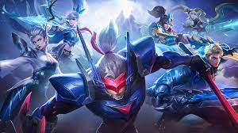
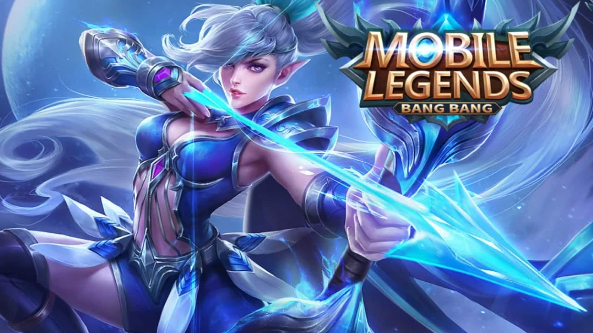
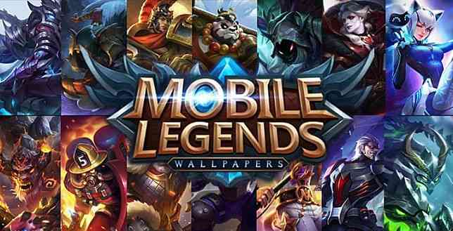

Imformation about Mobile Legends
Play right now!
History of Moba Legends
"Moba Legends" appears to be a mobile game developed by Moonton, a Chinese game developer. While I couldn't find specific details about a game called "Moba Legends," it's possible you may be referring to "Mobile Legends: Bang Bang," often abbreviated as MLBB or just "Mobile Legends."
"Mobile Legends: Bang Bang" is a multiplayer online battle arena (MOBA) game for mobile devices. It was released in 2016 and quickly gained popularity, especially in Southeast Asia. The game follows the standard MOBA format where two teams of five players each compete to destroy each other's base while defending their own. Players control characters called "heroes," each with their own unique abilities and roles.
Why Mobile Legends sucks?
Opinions about games, including "Mobile Legends: Bang Bang," can vary greatly from person to person. While the game has a large and dedicated player base, it's also faced criticism and negative feedback from some players. Here are a few reasons why some individuals might express dissatisfaction with Mobile Legends:
Matchmaking Issues: One common complaint among players is about the matchmaking system, which is responsible for pairing players of similar skill levels together. Some players feel that the matchmaking algorithm is flawed, leading to unfair matchups that result in frustrating gameplay experiences.
Balance Problems: Like many multiplayer games, achieving balance between different characters (heroes) and gameplay mechanics can be challenging. Some players may feel that certain heroes are overpowered or underpowered, leading to an imbalance in gameplay.
Toxicity: Online gaming communities can sometimes be toxic, with players engaging in negative behavior such as verbal abuse, trolling, and intentional feeding. While Mobile Legends has measures in place to address toxic behavior, some players may still encounter unpleasant interactions with others, which can detract from their enjoyment of the game.
Monetization Practices: While Mobile Legends is free to play, it includes in-game purchases for cosmetic items, heroes, and other features. Some players may feel that the game's monetization practices are overly aggressive or unfair, especially if they perceive certain items to provide gameplay advantages that can only be obtained through spending money.
Technical Issues: Like any online game, Mobile Legends may experience technical issues such as server downtime, lag, or connectivity problems. These issues can disrupt gameplay and frustrate players, particularly during ranked matches or other competitive events.
Lack of Innovation: While Mobile Legends has been successful in bringing the MOBA genre to mobile devices, some players may feel that the game lacks innovation or fails to differentiate itself sufficiently from other similar titles. This can lead to a sense of stagnation or boredom among players who are looking for new and exciting gameplay experiences.



Homepage